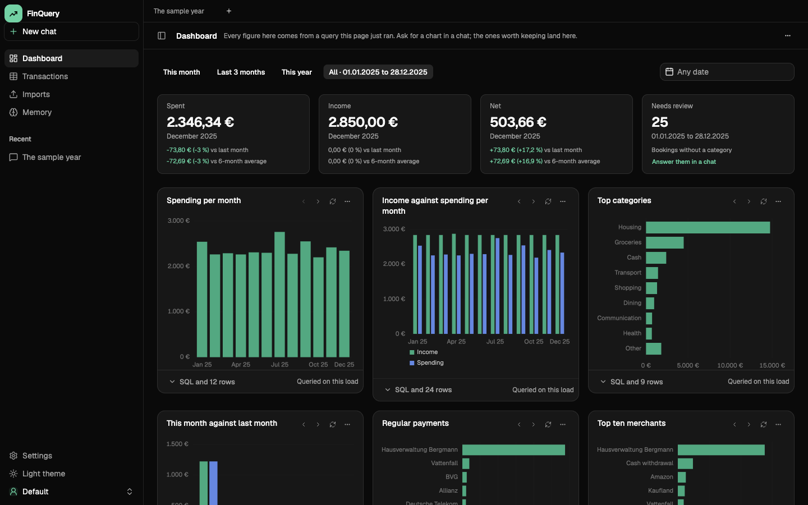
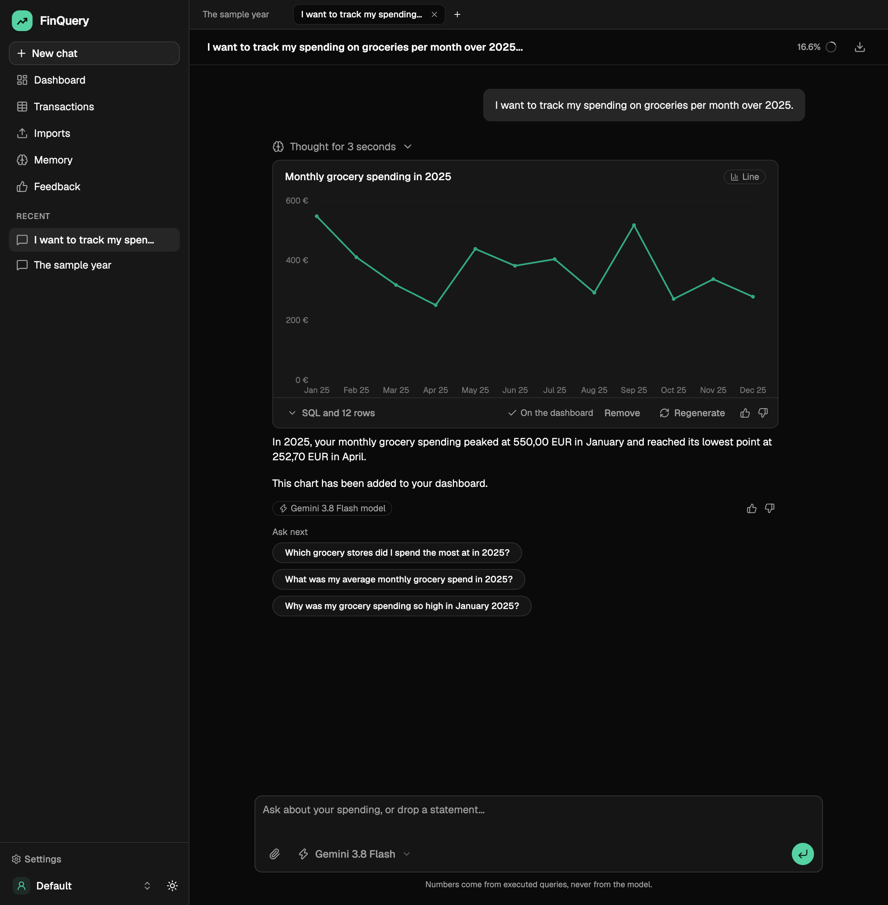
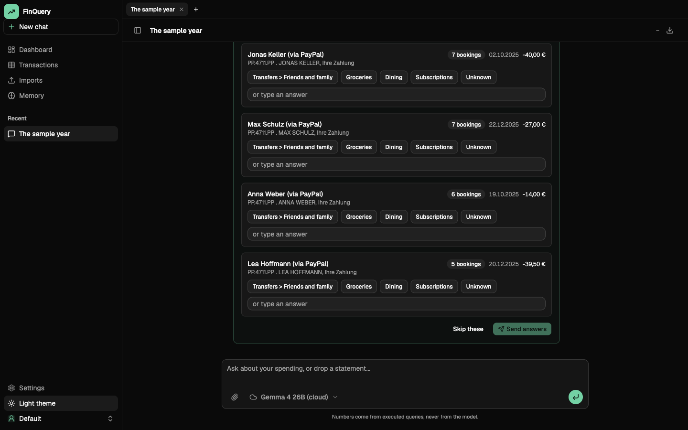
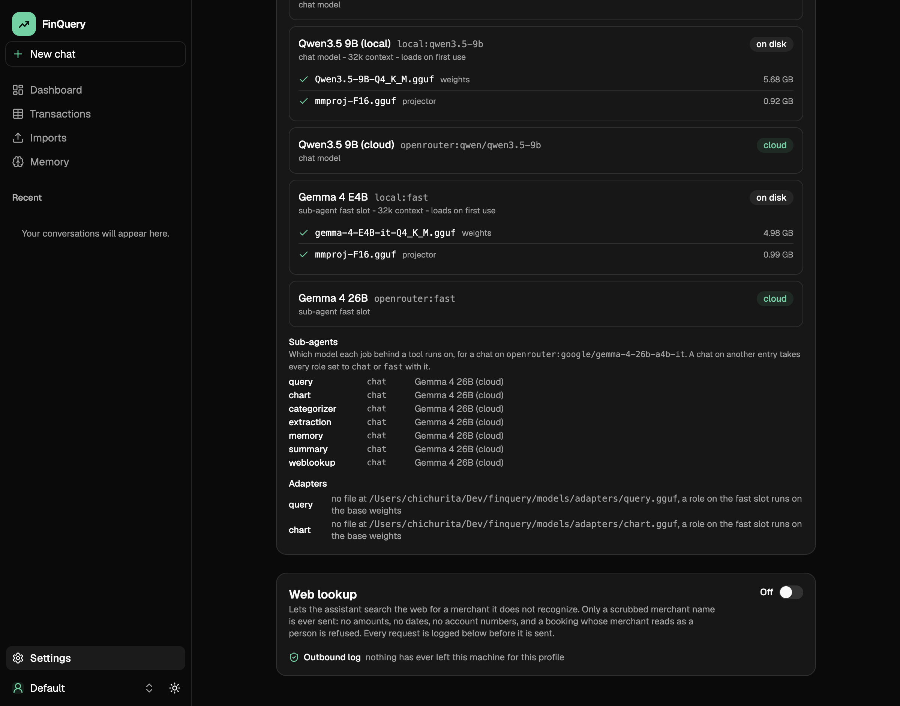
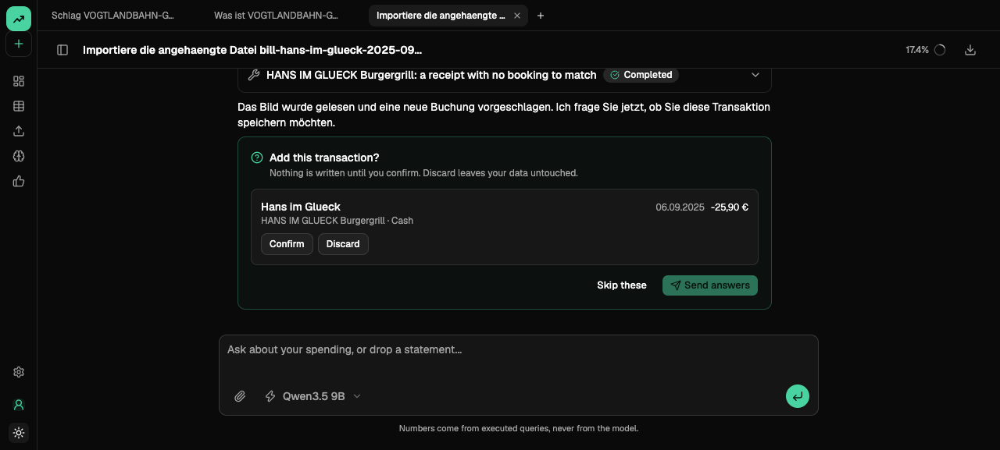
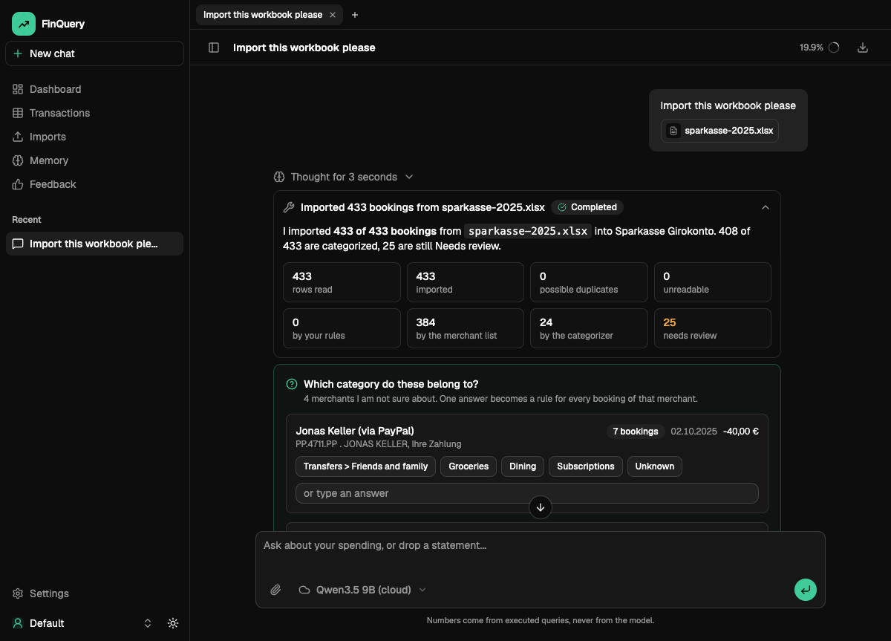
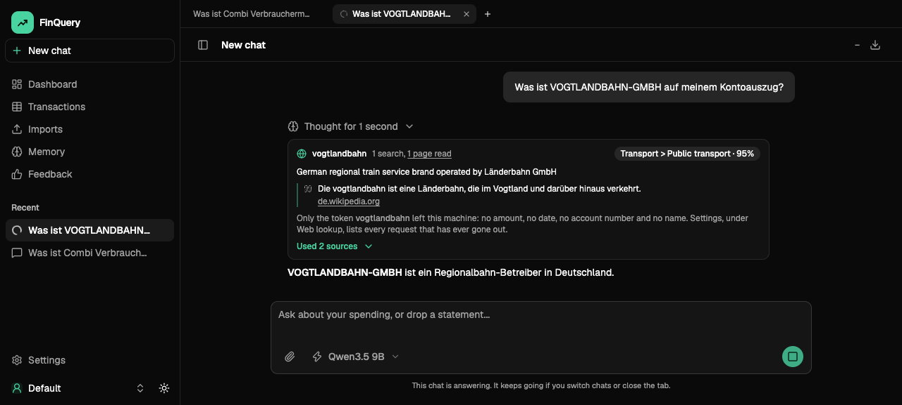
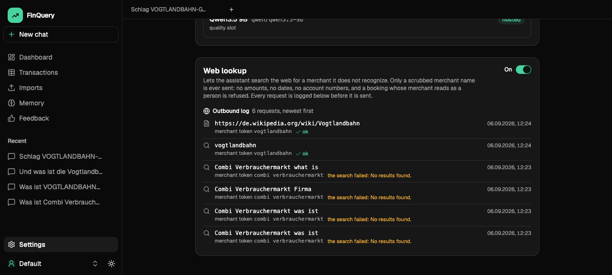

A local-first personal-finance analyst. Drop your bank statements into a chat, ask in your own words, get numbers you can audit.

Rahul Singh and Liudvikas Zekas, Hasso Plattner Institute, PotsdamEverything runs on the laptop: two Gemma 4 models through llama.cpp, SQLite, a React app
0:00 to 0:30. One sentence on what it is, one on who did what (Rahul Singh and Liudvikas Zekas). Then straight to the invariant. Do not read the screenshot; it is the dashboard the demo opens on.
The one rule
Numbers come from executed queries, never from the model
Every figure in an answer is the result of a SQL statement the assistant really ran against your own transactions, shown next to the answer. The model writes the question and the words. The database writes the numbers.
A guard in front of the database. One SELECT over a profile-scoped view, parsed with sqlglot, read-only, capped, refused when it invents categories or leaks cents.
A check pass after the query. A degenerate result or a wrong-shaped answer is sent back once with the finding. 69 to 79 percent figure match on the same model.
Prose is verified too. A figure typed into the answer that no query produced is flagged.
Charts are checked code. The chart sub-agent writes JavaScript for TanStack Charts; a self-check runs it on the real rows before a sandboxed frame draws it.

Query card, chart card and the answer in one turn. The card shows the SQL and the rows.
0:30 to 1:45. This is the thesis of the project and the answer to "why not just ask the model". Say the guard, the check pass and the chart self-check in one breath each. If asked where the check numbers come from: bench/results, Qwen3.5 9B cloud, 69 percent without the check pass, 79 with it.
Architecture in one picture
One chat agent, tools, sub-agents, a guard, a sandbox
Chat agent
Gemma 4 12B, thinking on, one model per conversation, switchable mid-chat.
Context: profile memory, rolling summary, the turn's tools.
Composer
Text, CSV, XLSX, PDF, DOCX, receipt photos. Every import and every decision happens in the chat.
→
Sub-agents as tools
query, chart, categorizer, extraction, memory, web lookup.
Forced tool calls, reasoning first, one retry with the finding. Each role has its own model setting.
Question cards
A deferred tool: the run parks until you answer, by button or by typing. Answers become rules.
→
SQL guard and SQLite
Profile-scoped view, read-only, sqlglot-validated. The only source of numbers.
Chart frame
Sandboxed iframe, six-colour palette, house rules enforced by the frame, not by the model.
Local runtime
llama.cpp in process. Gemma 4 12B on the chat seat, Gemma 4 E4B resident on the fast seat, 12.9 GB together.
1:45 to 2:45. Left to right: what the user touches, what the model does, what the machine guarantees. The point to land: the model never touches the database directly and never draws directly. If asked about the two models: the 12B was chosen by benchmark yesterday, the E4B stays resident because the adapters train against it.
Isolation. A profile is a workspace: its own transactions, conversations, memory, categories and rules. Every query runs through a temp view scoped to the profile.
Selection. Each turn assembles exactly what it needs: the distilled memory block, the rolling summary, the recent turns, and only the tools that apply (web lookup is not even declared when it is off).
Compression. At 60 percent of the 32k budget the older turns fold into a summary written by the fast model; the divider in the transcript is editable, so the user owns what was kept.
Memory. After every turn at most two durable facts are distilled, never figures or dates unless the user states a rule. A Memory page shows and edits them.

The header badge shows tokens used against the budget; the divider marks where the summary starts.
2:45 to 3:45. Name the three words of the sheet explicitly: compression, isolation, selection, and point to where each lives. The demo shows the badge and a memory recalled in a new chat.
Elective 2 of 4
Sub-agent deployment an LLM calls another LLM to do one task
Six sub-agents, each a tool call. The chat agent decides when; the sub-agent gets one prompt, a forced tool schema and a reasoning field before the answer.
Self-correcting. The query sub-agent gets a check pass and one rewrite; the chart sub-agent gets a self-check on the real rows and visible repair rounds.
Narrated. Every sub-agent step streams into the transcript as a chain of thought, so the user sees what was asked and answered.
One model setting per role. Default: the conversation's chat model. Switch a role to the fast seat and it runs on E4B, where the adapters attach.
Not claimed: the extra credit for a controller that continues without waiting. The turn is a server task that survives a closed tab, but the chat agent waits for its tool.

The Settings models card: the four catalog entries, both fast seats and the seven roles.
3:45 to 4:45. The honest line about the extra credit is deliberate: say it before they ask. The strongest fact here is the check-and-retry loop: it turned 69 into 79 percent on the same model without training anything.
Inherently multimodal models. Gemma 4 E4B and 12B read scanned statements and receipt photos through their vision projectors. Text-layer PDFs are read as text first, vision only where there is none.
Two guards on every extracted figure. Verbatim: every amount and date must occur in the source. Reconciliation: opening balance plus bookings equals closing balance. Anything flagged goes to a review card, nothing is written silently.
Measured. 19 of 19 receipt totals right on real and web receipts; the synthetic statement PDF reconciles to the cent; the real Edeka receipt needed an EXIF rotation fix.
Excel and Word go through the same paths as CSV and pasted text. Audio is out of scope and said so.

A receipt photo becomes a draft with title, category and item legs.

An Excel export imported through the chat: 433 rows, the preset recognized without a model call.
4:45 to 5:45. Lead with the guards, not the file types: the sheet asks for a VLM, we have one, but the interesting part is that a vision model is never trusted with a number it cannot point at in the source.
Elective 4 of 4
Self-controlled web search find a page, read it, quote it
A loop the model drives. Search, fetch or finish, up to four searches and three page reads, with a floor in code: at least one search, and a page read whenever a hit is the merchant's own site or Wikipedia.
Evidence, not vibes. The finish carries a verbatim quote that must occur in what was read; confidence is capped when no source names the merchant.
Privacy by construction. Only a scrubbed merchant token leaves the machine: never an amount, a date, an IBAN or a person's name. Every request is journaled before it is sent and shown in Settings.
Shared by three callers. The chat tool, the categorizer at import in a batch, and receipt headers. Measured yesterday: lookups without a search 9 to 0, pages read 0 to 12.


The card and the outbound log: token, search, page, quote.
5:45 to 6:45. The graders' wording is "further than direct results". Say: it visits the page and quotes it, and here is the log that proves what left the machine. Use Combi or Vogtlandbahn as the example, never a well-known chain.
Models, measured on the HPI cluster with the product's own runtime
Which local models, and the fine-tuning loop
Model, Q4_K_M
SQL figure match
Chart figure match
End to end
Laptop tok/s
Gemma 4 E4B
66 %
45 %
53 %
47
Qwen3.5 9B
70 %
42 %
73 %
30
Gemma 4 12B
87 %
81 %
77 %
22
152 SQL and 73 chart cases, held-out third never used for training. Same GGUFs and wire formats as the laptop, one RTX PRO 6000 per job. bench/results/20260906-cluster-compare.md
The decision rule was written before the numbers: accuracy first, speed within five points, the pair must fit in 13.5 GB. Result: Gemma 4 12B for chat and sub-agents, E4B resident as the fast seat.
Four QLoRA adaptersin progress query and chart on both bases. Training data written by 60 agents over five new synthetic households, kept only by execution: guard, database, an independent second statement, chart self-check, a rendered picture judged.
The benchmark is the validation set. Frozen split, the shipped household is benchmark-only and unseen in training, checkpoints every epoch scored on a quick set, only the best is converted to GGUF and scored for real.
Smoke-tested end to end on an H100 yesterday: 20 steps, conversion, adapter attached, five benchmark cases right.
6:45 to 7:40. The table is the ownership moment: we chose Qwen on memory in week one and reversed it on evidence yesterday. Say the training status as it stands on Monday morning (the deck's NOTES.md has the line to update). Do not promise adapter numbers you do not have.
What we own
Decisions we made, and the ones we reversed on evidence
Kept
Numbers only from executed SQL. Sub-agents as forced tool calls with reasoning first. Every import and every decision in the chat. Training equals production: a sample is byte for byte the prompt the sub-agent sends.
Reversed
Qwen3.5 9B as quality slot, chosen on memory, replaced by Gemma 4 12B after the cluster benchmark. Preference optimisation built, measured and removed for multimodal ingestion. "No dashboard" turned into a dashboard of guarded queries with a date range.
Adapter numbers against vanilla, the video, a second data round if the learning curve asks for it.
Docs: docs/explainers (one chapter per required bullet and per elective, with sources), docs/adr (13 decisions), bench/ (the benchmark and every run), training/ (data harness and cluster loop).
QuestionsHand-in as a ZIP archive on 2026-09-14
7:40 to 8:00. Close on ownership: three reversals, each with the evidence that forced it. Then stop and take questions. Likely questions and answers are in docs/explainers, one section per chapter.